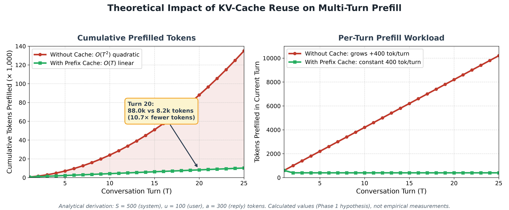
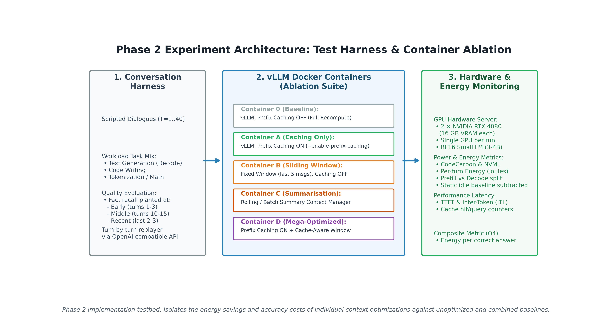

In production dialogue, LLMs are stateless. Each message resends the entire history, triggering quadratic prefill:

KV-Cache Footprint: Storing intermediate attention vectors requires 128 KiB/token (Llama-3-8B FP16) → 1 GB VRAM per 8k context.
PagedAttention (Kwon et al., SOSP 2023): Pages KV-cache into 16-token non-contiguous blocks. Prefix caching reuses blocks matching previous prompt hash sequences.
To prevent GPU Out-Of-Memory errors, developers truncate or summarize conversations. This actively breaks prefix caching!

- Sliding Window: Shifts the start token → 100% Cache Miss on every subsequent turn.
- Summarisation: Rewrites the prompt prefix → Invalidation + heavy autoregressive decode energy tax.
Is keeping full history the quality ideal? No! Liu et al. (TACL 2024) prove LLMs suffer from severe positional bias:

Hypothesis: In short-to-medium dialogues, generating summaries costs more Joules than it saves in prefill. Only past T* turns does the reduced sequence length offset the continuous decode tax.
Phase 2 deploys an ablation matrix of Docker containers on our dedicated server:

| Container | Configuration |
|---|---|
| Cont. 0 | Baseline: Prefix Caching OFF |
| Cont. A | Prefix Caching ON (vLLM) |
| Cont. B | Sliding Window (5 msgs), Cache OFF |
| Cont. C | Rolling Summary, Cache OFF |
| Cont. D | Mega-Optimized: Cache ON + Chunked Window |
- Server: 2 × NVIDIA RTX 4080 (16 GB VRAM). Single GPU per run to avoid tensor parallelism overhead (+29–55% energy).
- Measurement: CodeCarbon + direct NVML energy counters. Warm-ups discarded, idle power subtracted.
- Evaluation: Recall of facts planted at Early (T1–3), Middle (T10–15), and Recent turns.